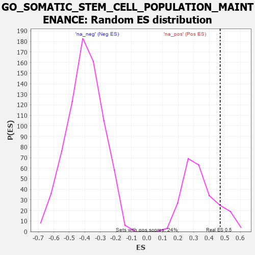

| | | Dataset | 7d |
| Phenotype | NoPhenotypeAvailable |
| Upregulated in class | na_pos |
| GeneSet | GO_SOMATIC_STEM_CELL_POPULATION_MAINTENANCE |
| Enrichment Score (ES) | 0.47060826 |
| Normalized Enrichment Score (NES) | 1.3861656 |
| Nominal p-value | 0.13114753 |
| FDR q-value | 0.35834152 |
| FWER p-Value | 1.0 |
Table: GSEA Results Summary
 Fig 1: Enrichment plot: GO_SOMATIC_STEM_CELL_POPULATION_MAINTENANCE
Fig 1: Enrichment plot: GO_SOMATIC_STEM_CELL_POPULATION_MAINTENANCE
Profile of the Running ES Score & Positions of GeneSet Members on the Rank Ordered List
| PROBE | GENE SYMBOL | GENE_TITLE | RANK IN GENE LIST | RANK METRIC SCORE | RUNNING ES | CORE ENRICHMENT | | 1 | SIX2 | | | 40 | 3.152 | 0.3175 | Yes |
| 2 | SPI1 | | | 162 | 1.182 | 0.4232 | Yes |
| 3 | ZIC3 | | | 760 | 0.542 | 0.4035 | Yes |
| 4 | LDB2 | | | 831 | 0.523 | 0.4482 | Yes |
| 5 | YAP1 | | | 1041 | 0.475 | 0.4706 | Yes |
| 6 | LRP5 | | | 1769 | 0.342 | 0.4142 | No |
| 7 | SMAD4 | | | 1860 | 0.326 | 0.4362 | No |
| 8 | RAF1 | | | 2011 | 0.303 | 0.4483 | No |
| 9 | BMP7 | | | 2107 | 0.290 | 0.4660 | No |
| 10 | REST | | | 2308 | 0.259 | 0.4673 | No |
| 11 | SALL4 | | | 2523 | 0.223 | 0.4633 | No |
| 12 | NR2E1 | | | 2844 | 0.177 | 0.4411 | No |
| 13 | CUL4A | | | 3097 | 0.137 | 0.4234 | No |
| 14 | SKI | | | 3762 | 0.032 | 0.3432 | No |
| 15 | VPS72 | | | 3948 | 0.003 | 0.3203 | No |
| 16 | FOXD3 | | | 4667 | -0.132 | 0.2435 | No |
| 17 | KLF4 | | | 5005 | -0.198 | 0.2214 | No |
| 18 | EPHA1 | | | 5349 | -0.285 | 0.2074 | No |
| 19 | SMAD2 | | | 6216 | -0.541 | 0.1539 | No |
| 20 | SOX2 | | | 6477 | -0.652 | 0.1879 | No |
Table: GSEA details [plain text format]

Fig 2: GO_SOMATIC_STEM_CELL_POPULATION_MAINTENANCE: Random ES distribution
Gene set null distribution of ES for GO_SOMATIC_STEM_CELL_POPULATION_MAINTENANCE